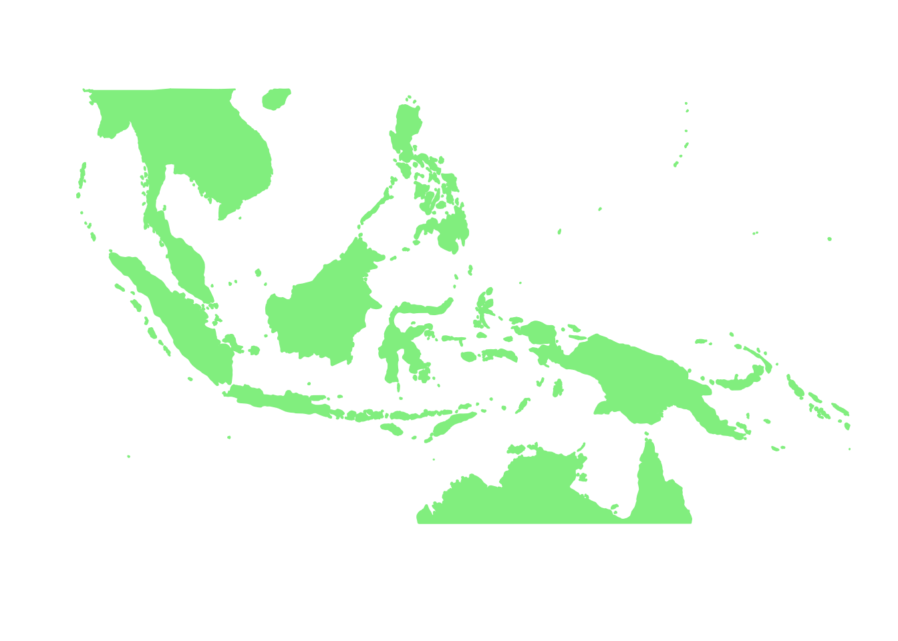
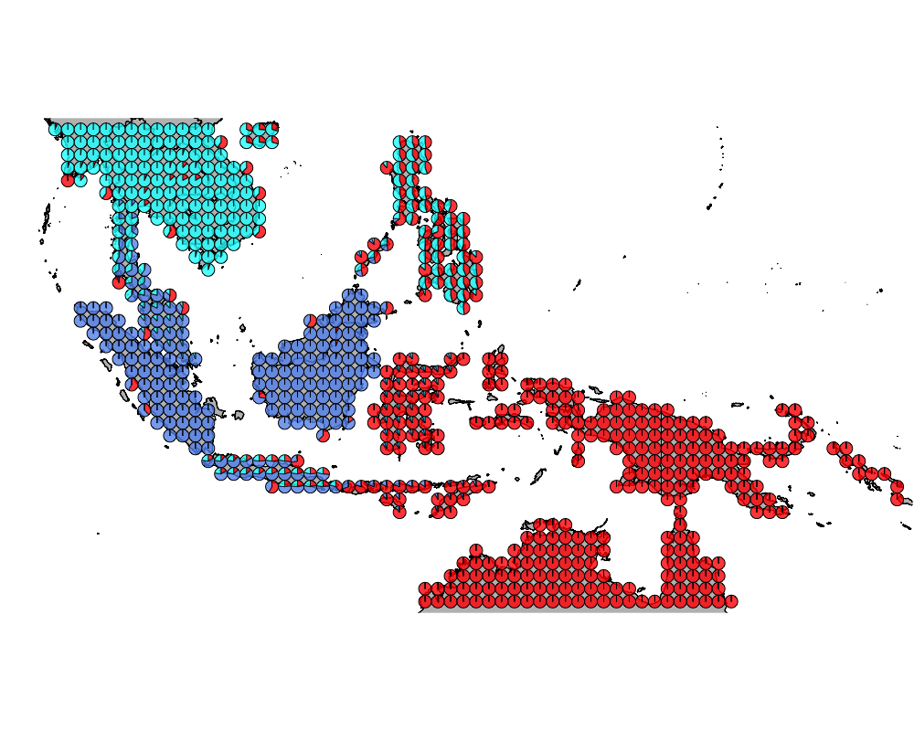
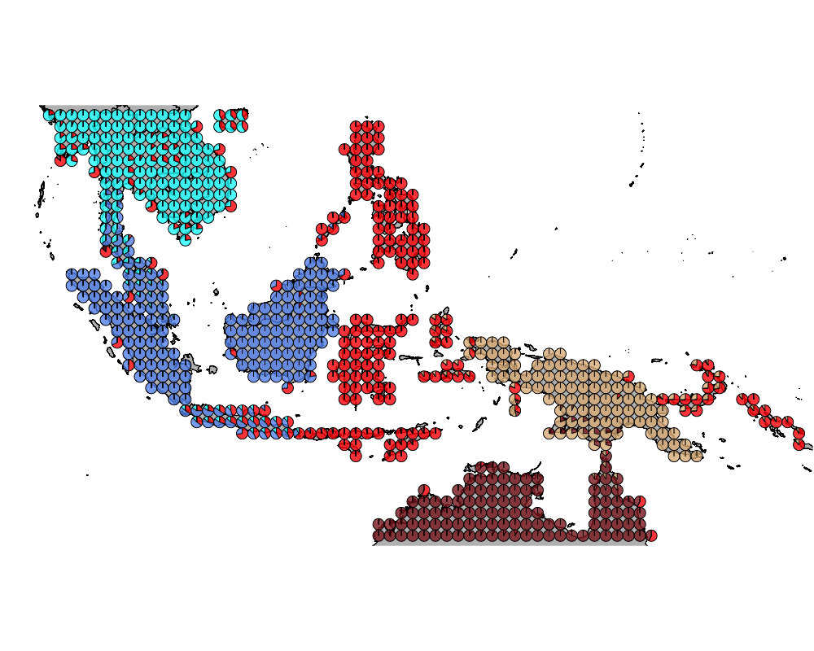
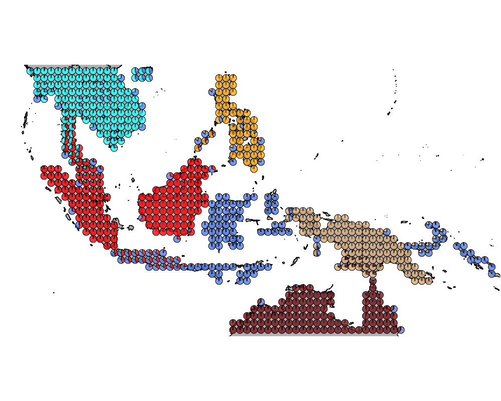
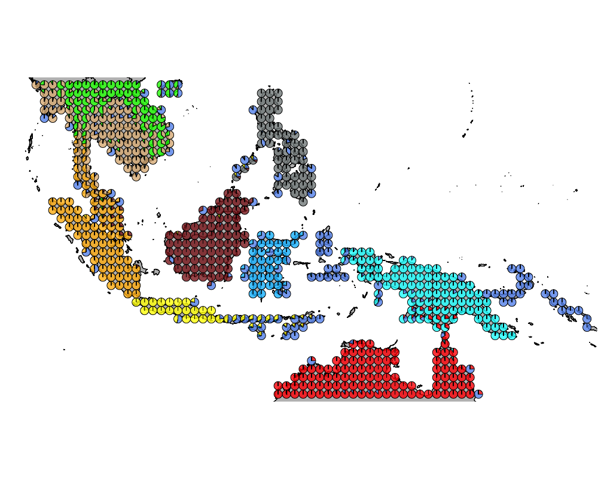

Wallacea region GoM analysis : mammals - no bats and birds
Kushal K Dey
6/8/2018
Intro
Here we observe the presence absence data of mammals and birds species (including different species of bats) in the Australasian region (Wallacea). We try to interpret that in the context of our Grade of Membership (GoM) model and its applications to presence absence data.
Packages
library(methClust)
library(CountClust)
library(rasterVis)
library(gtools)
library(sp)
library(rgdal)
library(ggplot2)
library(maps)
library(mapdata)
library(mapplots)
library(scales)
library(ggthemes)Load the data
Wallacea Region data
Mammals
mamms <- get(load("../data/mammals_without_bats.rda"))
latlong_chars_mammals <- rownames(mamms)Birds
birds <- get(load("../data/wallacea_birds.rda"))
latlong_chars_birds <- rownames(birds)pooled_latlong <- intersect(latlong_chars_mammals, latlong_chars_birds)
mamms_pool <- mamms[match(pooled_latlong, latlong_chars_mammals), ]
birds_pool <- birds[match(pooled_latlong, latlong_chars_birds), ]latlong <- cbind.data.frame(as.numeric(sapply(pooled_latlong,
function(x) return(strsplit(x, "_")[[1]][1]))),
as.numeric(sapply(pooled_latlong,
function(x) return(strsplit(x, "_")[[1]][2]))))combined_data <- cbind(mamms_pool, birds_pool)Map of Wallacea
world_map <- map_data("world")
world_map <- world_map[world_map$region != "Antarctica",] # intercourse antarctica
world_map <- world_map[world_map$long > 90 & world_map$long < 160, ]
world_map <- world_map[world_map$lat > -18 & world_map$lat < 20, ]
p <- ggplot() + coord_fixed() +
xlab("") + ylab("")
#Add map to base plot
base_world_messy <- p + geom_polygon(data=world_map, aes(x=long, y=lat, group=group), colour="light green", fill="light green")
cleanup <-
theme(panel.grid.major = element_blank(), panel.grid.minor = element_blank(),
panel.background = element_rect(fill = 'white', colour = 'white'),
axis.line = element_line(colour = "white"), legend.position="none",
axis.ticks=element_blank(), axis.text.x=element_blank(),
axis.text.y=element_blank())
base_world <- base_world_messy + cleanup
base_world
richness <- rowSums(combined_data)colorGradient <- colorRampPalette(c("blue", "white", "red"))(max(richness))
plot(latlong[,1], latlong[,2], col= colorGradient[richness], pch = 20, cex = 1.5)Applying methclust presence absence Grade of Membership model to the presence absence data
topics_clust <- list()
topics_clust[[1]] <- NULL
for(k in 2:10){
topics_clust[[k]] <- meth_topics(combined_data, 1 - combined_data,
K=k, tol = 10, use_squarem = FALSE)
}
save(topics_clust, file = "../output/methClust_wallacea_mammals_and_birds_no_bats.rda")Visualization
topics_clust <- get(load("../output/methClust_wallacea_mammals_and_birds_no_bats.rda"))color = c("red", "cornflowerblue", "cyan", "brown4", "burlywood", "darkgoldenrod1",
"azure4", "green","deepskyblue","yellow", "azure1")
intensity <- 0.8
for(k in 2:10){
png(filename=paste0("../docs/Wallacea_mammals_birds_no_bats/geostructure_", k, ".png"),width = 1000, height = 800)
map("worldHires",
ylim=c(-18,20), xlim=c(90,160), # Re-defines the latitude and longitude range
col = "gray", fill=TRUE, mar=c(0.1,0.1,0.1,0.1))
lapply(1:dim(topics_clust[[k]]$omega)[1], function(r)
add.pie(z=as.integer(100*topics_clust[[k]]$omega[r,]),
x=latlong[r,1], y=latlong[r,2], labels=c("","",""),
radius = 0.5,
col=c(alpha(color[1],intensity),alpha(color[2],intensity),
alpha(color[3], intensity), alpha(color[4], intensity),
alpha(color[5], intensity), alpha(color[6], intensity),
alpha(color[7], intensity), alpha(color[8], intensity),
alpha(color[9], intensity), alpha(color[10], intensity),
alpha(color[11], intensity))));
dev.off()
}The geostructure plot for different K.
K = 2

K = 3

K = 4
K = 5

K = 6

K = 7

K = 8

K = 9

K = 10

Important species
We obtain the driving mammals/ bird species for each cluster using the CountClust package.
K = 2
driving_species_ind <- ExtractTopFeatures(topics_clust[[2]]$freq, method = "poisson", options = "min", top_features = 250)
species_names <- apply(driving_species_ind$indices, c(1,2), function(x) return (rownames(topics_clust[[2]]$freq)[x]))
t(species_names)## [,1] [,2]
## [1,] "Cacatua galerita" "Eumyias thalassinus"
## [2,] "Accipiter cirrocephalus" "Dicrurus aeneus"
## [3,] "Ardea plumifera" "Corydon sumatranus"
## [4,] "Falco berigora" "Dicaeum chrysorrheum"
## [5,] "Hydromys.chrysogaster" "Dicaeum cruentatum"
## [6,] "Haliastur sphenurus" "Niviventer.fulvescens"
## [7,] "Gerygone magnirostris" "Orthotomus atrogularis"
## [8,] "Colluricincla megarhyncha" "Eurylaimus javanicus"
## [9,] "Rhipidura rufiventris" "Prinia flaviventris"
## [10,] "Gerygone chloronota" "Anthreptes singalensis"
## [11,] "Anhinga novaehollandiae" "Malacocincla abbotti"
## [12,] "Vanellus miles" "Micropternus brachyurus"
## [13,] "Cracticus quoyi" "Ducula badia"
## [14,] "Colluricincla harmonica" "Hemipus picatus"
## [15,] "Nettapus pulchellus" "Chloropsis cochinchinensis"
## [16,] "Podargus papuensis" "Copsychus malabaricus"
## [17,] "Macropus.agilis" "Strix leptogrammica"
## [18,] "Dacelo leachii" "Anthracoceros albirostris"
## [19,] "Aplonis cantoroides" "Sitta frontalis"
## [20,] "Daphoenositta chrysoptera" "Cuculus micropterus"
## [21,] "Uromys.caudimaculatus" "Tephrodornis gularis"
## [22,] "Tachyglossus.aculeatus" "Picoides canicapillus"
## [23,] "Centropus phasianinus" "Rhyticeros undulatus"
## [24,] "Ninox rufa" "Ninox scutulata"
## [25,] "Mino dumontii" "Ketupa ketupu"
## [26,] "Myiagra rubecula" "Niltava grandis"
## [27,] "Coracina papuensis" "Dicrurus paradiseus"
## [28,] "Geopelia humeralis" "Enicurus leschenaulti"
## [29,] "Rhipidura leucophrys" "Abroscopus superciliaris"
## [30,] "Pachycephala simplex" "Hypogramma hypogrammicum"
## [31,] "Megaloprepia magnifica" "Dicaeum concolor"
## [32,] "Synoicus ypsilophorus" "Irena puella"
## [33,] "Xanthotis flaviventer" "Cacomantis sonneratii"
## [34,] "Melomys.rufescens" "Aegithina tiphia"
## [35,] "Dactylopsila.trivirgata" "Dendrocygna javanica"
## [36,] "Antigone rubicunda" "Picus vittatus"
## [37,] "Echymipera.rufescens" "Stachyris rufifrons"
## [38,] "Geopelia placida" "Ploceus philippinus"
## [39,] "Probosciger aterrimus" "Buceros bicornis"
## [40,] "Ardeotis australis" "Lonchura striata"
## [41,] "Echymipera.kalubu" "Spilornis cheela"
## [42,] "Cacomantis castaneiventris" "Ardea cinerea"
## [43,] "Corvus orru" "Cyornis tickelliae"
## [44,] "Machaerirhynchus flaviventer" "Pycnonotus atriceps"
## [45,] "Podargus ocellatus" "Halcyon smyrnensis"
## [46,] "Rallina tricolor" "Dinopium javanense"
## [47,] "Gerygone palpebrosa" "Phaenicophaeus tristis"
## [48,] "Neochmia phaeton" "Pardofelis.marmorata"
## [49,] "Syma torotoro" "Erpornis zantholeuca"
## [50,] "Dicaeum hirundinaceum" "Picumnus innominatus"
## [51,] "Aprosmictus erythropterus" "Prionochilus maculatus"
## [52,] "Lalage leucomela" "Lacedo pulchella"
## [53,] "Manucodia keraudrenii" "Cymbirhynchus macrorhynchos"
## [54,] "Pomatostomus temporalis" "Nyctyornis amictus"
## [55,] "Lichmera indistincta" "Myophonus caeruleus"
## [56,] "Oriolus sagittatus" "Phodilus badius"
## [57,] "Glycichaera fallax" "Pitta moluccensis"
## [58,] "Pseudomys.delicatulus" "Merops viridis"
## [59,] "Ceyx azureus" "Psilopogon lineatus"
## [60,] "Aegotheles cristatus" "Rhinortha chlorophaea"
## [61,] "Philemon citreogularis" "Pycnonotus aurigaster"
## [62,] "Ceyx solitarius" "Alcedo peninsulae"
## [63,] "Dacelo gaudichaud" "Meiglyptes grammithorax"
## [64,] "Gallicolumba rufigula" "Centropus sinensis"
## [65,] "Henicopernis longicauda" "Sturnus nigricollis"
## [66,] "Henicophaps albifrons" "Psilopogon mystacophanos"
## [67,] "Merops ornatus" "Rhizothera longirostris"
## [68,] "Eudynamys orientalis" "Platysmurus leucopterus"
## [69,] "Microeca flavovirescens" "Psilopogon cyanotis"
## [70,] "Ptilinopus perlatus" "Iole propinqua"
## [71,] "Centropus menbeki" "Chrysocolaptes guttacristatus"
## [72,] "Meliphaga analoga" "Hirundapus giganteus"
## [73,] "Monarcha guttula" "Crypsirina temia"
## [74,] "Pitohui ferrugineus" "Hemicircus sordidus"
## [75,] "Lalage tricolor" "Rollulus rouloul"
## [76,] "Ducula zoeae" "Asarcornis scutulata"
## [77,] "Zonerodius heliosylus" "Harpactes duvaucelii"
## [78,] "Ducula rufigaster" "Phaenicophaeus diardi"
## [79,] "Ptilinopus iozonus" "Phaenicophaeus sumatranus"
## [80,] "Ducula pinon" "Treron capellei"
## [81,] "Coracina novaehollandiae" "Eurylaimus ochromalus"
## [82,] "Megalurus timoriensis" "Tricholestes criniger"
## [83,] "Ptilinopus coronulatus" "Stachyris erythroptera"
## [84,] "Pycnopygius stictocephalus" "Blythipicus rubiginosus"
## [85,] "Petaurus.breviceps" "Iole olivacea"
## [86,] "Meliphaga aruensis" "Calyptomena viridis"
## [87,] "Accipiter poliocephalus" "Macronous gularis"
## [88,] "Radjah radjah" "Philentoma pyrhoptera"
## [89,] "Pseudeos fuscata" "Arachnothera flavigaster"
## [90,] "Lorius lory" "Pycnonotus erythropthalmos"
## [91,] "Melidora macrorrhina" "Anorrhinus galeritus"
## [92,] "Oedistoma pygmaeum" "Enicurus ruficapillus"
## [93,] "Falco cenchroides" "Pitta irena"
## [94,] "Arses telescophthalmus" "Nisaetus nanus"
## [95,] "Melithreptus albogularis" "Lophura rufa"
## [96,] "Trugon terrestris" "Mulleripicus pulverulentus"
## [97,] "Accipiter fasciatus" "Aethopyga saturata"
## [98,] "Coracina boyeri" "Ixos malaccensis"
## [99,] "Oriolus szalayi" "Hierococcyx fugax"
## [100,] "Aquila audax" "Aegithina viridissima"
## [101,] "Chalcites basalis" "Berenicornis comatus"
## [102,] "Elseyornis melanops" "Treron curvirostra"
## [103,] "Eurostopodus argus" "Anthreptes simplex"
## [104,] "Hamirostra melanosternon" "Pycnonotus brunneus"
## [105,] "Pachycephala rufiventris" "Chloropsis cyanopogon"
## [106,] "Podargus strigoides" "Seicercus castaniceps"
## [107,] "Smicrornis brevirostris" "Melanoperdix niger"
## [108,] "Threskiornis spinicollis" "Indicator archipelagicus"
## [109,] "Todiramphus sanctus" "Helarctos.malayanus"
## [110,] "Coracina melas" "Ploceus hypoxanthus"
## [111,] "Monarcha chrysomela" "Pycnonotus cyaniventris"
## [112,] "Cracticus cassicus" "Pycnonotus eutilotus"
## [113,] "Trichoglossus haematodus" "Centropus rectunguis"
## [114,] "Hieraaetus weiskei" "Malacopteron cinereum"
## [115,] "Lonchura tristissima" "Treron fulvicollis"
## [116,] "Tyto tenebricosa" "Eupetes macrocerus"
## [117,] "Corvus tristis" "Meiglyptes tukki"
## [118,] "Artamus minor" "Malacocincla malaccensis"
## [119,] "Calyptorhynchus banksii" "Ramphiculus jambu"
## [120,] "Chlamydera nuchalis" "Rhipidura albicollis"
## [121,] "Elanus axillaris" "Arborophila chloropus"
## [122,] "Heteroscenes pallidus" "Lyncornis temminckii"
## [123,] "Hieraaetus morphnoides" "Rhinoplax vigil"
## [124,] "Malurus melanocephalus" "Dicrurus remifer"
## [125,] "Taeniopygia bichenovii" "Hierococcyx vagans"
## [126,] "Todiramphus pyrrhopygius" "Napothera brevicaudata"
## [127,] "Myzomela eques" "Philentoma velata"
## [128,] "Gerygone olivacea" "Pycnonotus melanoleucos"
## [129,] "Ardea pacifica" "Rusa.unicolor"
## [130,] "Aythya australis" "Psilopogon duvaucelii"
## [131,] "Dendrocygna eytoni" "Rhipidura perlata"
## [132,] "Geopelia cuneata" "Psittinus cyanurus"
## [133,] "Turnix pyrrhothorax" "Mus.caroli"
## [134,] "Megatriorchis doriae" "Menetes.berdmorei"
## [135,] "Microdynamis parva" "Harpactes erythrocephalus"
## [136,] "Pomatostomus isidorei" "Stachyris nigriceps"
## [137,] "Lonchura castaneothorax" "Oriolus traillii"
## [138,] "Cacatua sanguinea" "Alophoixus phaeocephalus"
## [139,] "Certhionyx pectoralis" "Chrysophlegma miniaceum"
## [140,] "Harpyopsis novaeguineae" "Martes.flavigula"
## [141,] "Ptiloris magnificus" "Loriculus galgulus"
## [142,] "Eolophus roseicapilla" "Prionochilus thoracicus"
## [143,] "Cracticus nigrogularis" "Rhinomyias umbratilis"
## [144,] "Rhipidura threnothorax" "Dinopium rafflesii"
## [145,] "Microeca fascinans" "Trichixos pyrropygus"
## [146,] "Gerygone chrysogaster" "Rhabdotorrhinus corrugatus"
## [147,] "Philemon argenticeps" "Pitta caerulea"
## [148,] "Pardalotus rubricatus" "Arctogalidia.trivirgata"
## [149,] "Pelecanus conspicillatus" "Chrysophlegma flavinucha"
## [150,] "Entomyzon cyanotis" "Tragulus.kanchil"
## [151,] "Eurostopodus papuensis" "Hystrix.brachyura"
## [152,] "Lichenostomus unicolor" "Lophura erythrophthalma"
## [153,] "Conopophila rufogularis" "Arachnothera chrysogenys"
## [154,] "Isoodon.macrourus" "Elephas.maximus"
## [155,] "Spilocuscus.maculatus" "Surniculus lugubris"
## [156,] "Coracina tenuirostris" "Psittacula longicauda"
## [157,] "Chalcites osculans" "Erythrura prasina"
## [158,] "Xanthotis polygrammus" "Picus chlorolophus"
## [159,] "Sipodotus wallacii" "Petaurista.philippensis"
## [160,] "Artamus superciliosus" "Aegithina lafresnayei"
## [161,] "Myiagra inquieta" "Actenoides concretus"
## [162,] "Philemon novaeguineae" "Chrysocolaptes validus"
## [163,] "Poephila personata" "Paguma.larvata"
## [164,] "Loriculus aurantiifrons" "Harpactes diardii"
## [165,] "Peltops blainvillii" "Lutra.lutra"
## [166,] "Hirundo ariel" "Cyornis caerulatus"
## [167,] "Macropygia nigrirostris" "Cyornis hainanus"
## [168,] "Ramsayornis fasciatus" "Ciconia stormi"
## [169,] "Falco subniger" "Psilopogon henricii"
## [170,] "Macropus.robustus" "Lonchura maja"
## [171,] "Cicinnurus regius" "Alophoixus finschii"
## [172,] "Lichenostomus flavescens" "Mirafra erythrocephala"
## [173,] "Microeca flavigaster" "Pycnonotus finlaysoni"
## [174,] "Ptilinopus aurantiifrons" "Psilopogon rafflesii"
## [175,] "Artamus personatus" "Picus puniceus"
## [176,] "Paramelomys.platyops" "Panthera.tigris"
## [177,] "Rhipidura rufidorsa" "Orthotomus sutorius"
## [178,] "Pitohui kirhocephalus" "Prinia rufescens"
## [179,] "Rhipidura hyperythra" "Serilophus lunatus"
## [180,] "Melilestes megarhynchus" "Acridotheres tristis"
## [181,] "Ninox theomacha" "Upupa epops"
## [182,] "Rhipidura leucothorax" "Anthracoceros malayanus"
## [183,] "Neochmia ruficauda" "Sasia abnormis"
## [184,] "Lagorchestes.conspicillatus" "Sasia ochracea"
## [185,] "Alopecoenas jobiensis" "Caprimulgus concretus"
## [186,] "Gymnorhina tibicen" "Pycnonotus jocosus"
## [187,] "Myzomela erythrocephala" "Otus spilocephalus"
## [188,] "Myiagra alecto" "Gyps bengalensis"
## [189,] "Erythrotriorchis radiatus" "Zanclostomus javanicus"
## [190,] "Erythrogonys cinctus" "Chloropsis sonnerati"
## [191,] "Phalanger.gymnotis" "Hypsipetes leucocephalus"
## [192,] "Pardalotus striatus" "Lepus.peguensis"
## [193,] "Conopophila albogularis" "Callosciurus.erythraeus"
## [194,] "Ducula spilorrhoa" "Heterophasia picaoides"
## [195,] "Dicaeum geelvinkianum" "Cochoa viridis"
## [196,] "Psitteuteles versicolor" "Arachnothera robusta"
## [197,] "Onychogalea.unguifera" "Maxomys.surifer"
## [198,] "Mearnsia novaeguineae" "Arachnothera affinis"
## [199,] "Lichenostomus virescens" "Pitta phayrei"
## [200,] "Coracina lineata" "Harpactes kasumba"
## [201,] "Burhinus grallarius" "Pellorneum capistratum"
## [202,] "Caliechthrus leucolophus" "Prinia atrogularis"
## [203,] "Artamus cinereus" "Cyornis unicolor"
## [204,] "Ptilorrhoa caerulescens" "Vanellus duvaucelii"
## [205,] "Leggadina.lakedownensis" "Leiothrix argentauris"
## [206,] "Tyto novaehollandiae" "Psilopogon pyrolophus"
## [207,] "Eopsaltria pulverulenta" "Vanellus indicus"
## [208,] "Chalcites meyerii" "Trichastoma tickelli"
## [209,] "Toxorhamphus iliolophus" "Pycnonotus simplex"
## [210,] "Melanodryas cucullata" "Treron sphenurus"
## [211,] "Monarcha manadensis" "Argusianus argus"
## [212,] "Malurus cyanocephalus" "Hemipus hirundinaceus"
## [213,] "Xenuromys.barbatus" "Coracina fimbriata"
## [214,] "Phalacrocorax varius" "Arachnothera crassirostris"
## [215,] "Zyzomys.argurus" "Chrysophlegma humii"
## [216,] "Aerodramus hirundinaceus" "Cinclidium leucurum"
## [217,] "Phaps histrionica" "Otus lempiji"
## [218,] "Melanocharis nigra" "Bubo nipalensis"
## [219,] "Dasyurus.albopunctatus" "Microhierax fringillarius"
## [220,] "Climacteris melanurus" "Pellorneum ruficeps"
## [221,] "Pycnopygius ixoides" "Lutrogale.perspicillata"
## [222,] "Pseudomys.nanus" "Otus rufescens"
## [223,] "Drymodes superciliaris" "Bubo sumatranus"
## [224,] "Cygnus atratus" "Platylophus galericulatus"
## [225,] "Trichoglossus rubritorquis" "Prionochilus percussus"
## [226,] "Ocyphaps lophotes" "Rhaphidura leucopygialis"
## [227,] "Ninox boobook" "Ketupa zeylonensis"
## [228,] "Manorina flavigula" "Pitta granatina"
## [229,] "Centropus bernsteini" "Minla cyanouroptera"
## [230,] "Pseudochirulus.canescens" "Leopoldamys.sabanus"
## [231,] "Trichosurus.vulpecula" "Harpactes oreskios"
## [232,] "Melithreptus gularis" "Pavo muticus"
## [233,] "Philemon meyeri" "Urocissa erythrorhyncha"
## [234,] "Turnix maculosus" "Orthotomus sericeus"
## [235,] "Ailuroedus buccoides" "Turnix tanki"
## [236,] "Lichenostomus plumulus" "Sturnus contra"
## [237,] "Monachella muelleriana" "Buceros rhinoceros"
## [238,] "Mino anais" "Terpsiphone paradisi"
## [239,] "Distoechurus.pennatus" "Passer flaveolus"
## [240,] "Cyclopsitta diophthalma" "Gracula religiosa"
## [241,] "Phaps chalcoptera" "Trichastoma bicolor"
## [242,] "Gelochelidon macrotarsa" "Sarcogyps calvus"
## [243,] "Macropus.antilopinus" "Garrulax chinensis"
## [244,] "Poecilodryas hypoleuca" "Sturnus burmannicus"
## [245,] "Coracina caeruleogrisea" "Euroscaptor.klossi"
## [246,] "Amaurornis moluccana" "Dicrurus leucophaeus"
## [247,] "Meliphaga flavirictus" "Ampeliceps coronatus"
## [248,] "Platycercus venustus" "Zosterops palpebrosus"
## [249,] "Grallina cyanoleuca" "Batrachostomus stellatus"
## [250,] "Ptilinopus pulchellus" "Psittacula roseata"K = 3
driving_species_ind <- ExtractTopFeatures(topics_clust[[3]]$freq, method = "poisson", options = "min", top_features = 250)
species_names <- apply(driving_species_ind$indices, c(1,2), function(x) return (rownames(topics_clust[[2]]$freq)[x]))
t(species_names)## [,1] [,2]
## [1,] "Eudynamys orientalis" "Ramphiculus jambu"
## [2,] "Anas gracilis" "Callosciurus.notatus"
## [3,] "Coracina tenuirostris" "Muntiacus.muntjak"
## [4,] "Synoicus ypsilophorus" "Lariscus.insignis"
## [5,] "Aviceda subcristata" "Actenoides concretus"
## [6,] "Pitta erythrogaster" "Arachnothera chrysogenys"
## [7,] "Ninox boobook" "Niviventer.cremoriventer"
## [8,] "Coracina papuensis" "Herpestes.semitorquatus"
## [9,] "Rhipidura leucophrys" "Nisaetus alboniger"
## [10,] "Corvus orru" "Iomys.horsfieldii"
## [11,] "Accipiter cirrocephalus" "Psilopogon rafflesii"
## [12,] "Accipiter fasciatus" "Chrysophlegma miniaceum"
## [13,] "Cacatua galerita" "Sundamys.muelleri"
## [14,] "Ardea plumifera" "Rattus.tiomanicus"
## [15,] "Scythrops novaehollandiae" "Philentoma velata"
## [16,] "Ceyx azureus" "Alophoixus finschii"
## [17,] "Petaurus.breviceps" "Picus puniceus"
## [18,] "Radjah radjah" "Pericrocotus igneus"
## [19,] "Macropygia amboinensis" "Pycnonotus simplex"
## [20,] "Nectarinia aspasia" "Orthotomus sericeus"
## [21,] "Haliastur sphenurus" "Centropus rectunguis"
## [22,] "Falco berigora" "Melanoperdix niger"
## [23,] "Hydromys.chrysogaster" "Chloropsis sonnerati"
## [24,] "Columba vitiensis" "Callosciurus.nigrovittatus"
## [25,] "Chalcophaps stephani" "Psilopogon duvaucelii"
## [26,] "Myiagra alecto" "Ciconia stormi"
## [27,] "Vanellus miles" "Prinia familiaris"
## [28,] "Erythrura trichroa" "Trichixos pyrropygus"
## [29,] "Eclectus roratus" "Meiglyptes tukki"
## [30,] "Gerygone magnirostris" "Picoides moluccensis"
## [31,] "Colluricincla harmonica" "Psilopogon henricii"
## [32,] "Nettapus pulchellus" "Pellorneum capistratum"
## [33,] "Cracticus quoyi" "Aeromys.tephromelas"
## [34,] "Dicrurus bracteatus" "Zanclostomus javanicus"
## [35,] "Gerygone chloronota" "Malacocincla malaccensis"
## [36,] "Colluricincla megarhyncha" "Argusianus argus"
## [37,] "Antigone rubicunda" "Prionochilus maculatus"
## [38,] "Ninox connivens" "Ixos malaccensis"
## [39,] "Ceyx pusillus" "Psittacula longicauda"
## [40,] "Ardeotis australis" "Trachypithecus.cristatus"
## [41,] "Amaurornis moluccana" "Coracina fimbriata"
## [42,] "Daphoenositta chrysoptera" "Batrachostomus stellatus"
## [43,] "Turnix maculosus" "Aerodramus salangana"
## [44,] "Macropus.agilis" "Prionochilus thoracicus"
## [45,] "Pomatostomus temporalis" "Rhinomyias umbratilis"
## [46,] "Lichmera indistincta" "Bubo sumatranus"
## [47,] "Geopelia humeralis" "Hemipus hirundinaceus"
## [48,] "Aprosmictus erythropterus" "Platylophus galericulatus"
## [49,] "Microcarbo melanoleucos" "Prionochilus percussus"
## [50,] "Oriolus sagittatus" "Aegithina viridissima"
## [51,] "Aegotheles cristatus" "Otus lempiji"
## [52,] "Philemon citreogularis" "Rhaphidura leucopygialis"
## [53,] "Coracina novaehollandiae" "Pycnonotus melanoleucos"
## [54,] "Pseudomys.delicatulus" "Oriolus xanthonotus"
## [55,] "Falco cenchroides" "Alcedo peninsulae"
## [56,] "Ptilinopus superbus" "Arachnothera affinis"
## [57,] "Neochmia phaeton" "Trichys.fasciculata"
## [58,] "Merops ornatus" "Macropygia emiliana"
## [59,] "Lalage leucomela" "Arachnothera crassirostris"
## [60,] "Megalurus timoriensis" "Otus rufescens"
## [61,] "Gerygone olivacea" "Lophura pyronota"
## [62,] "Tyto novaehollandiae" "Dicrurus sumatranus"
## [63,] "Microeca fascinans" "Microhierax fringillarius"
## [64,] "Chalcophaps longirostris" "Rhipidura perlata"
## [65,] "Philemon argenticeps" "Lyncornis temminckii"
## [66,] "Pachycephala simplex" "Iole olivacea"
## [67,] "Aplonis metallica" "Malacocincla sepiaria"
## [68,] "Melithreptus albogularis" "Meiglyptes grammithorax"
## [69,] "Lichenostomus flavescens" "Rhinomyias olivaceus"
## [70,] "Lonchura molucca" "Maxomys.tajuddinii"
## [71,] "Aplonis cantoroides" "Eupetes macrocerus"
## [72,] "Ninox rufa" "Chrysocolaptes validus"
## [73,] "Gymnorhina tibicen" "Caprimulgus concretus"
## [74,] "Dendrocygna guttata" "Indicator archipelagicus"
## [75,] "Mino dumontii" "Harpactes kasumba"
## [76,] "Lalage tricolor" "Cyornis caerulatus"
## [77,] "Megapodius reinwardt" "Dicaeum trochileum"
## [78,] "Accipiter hiogaster" "Setornis criniger"
## [79,] "Hemiprocne mystacea" "Arachnothera flavigaster"
## [80,] "Podargus papuensis" "Pycnonotus cyaniventris"
## [81,] "Cacatua sanguinea" "Pycnonotus eutilotus"
## [82,] "Melomys.rufescens" "Nasalis.larvatus"
## [83,] "Burhinus grallarius" "Pitta baudii"
## [84,] "Gerygone palpebrosa" "Ptilocichla leucogrammica"
## [85,] "Echymipera.kalubu" "Hemicircus sordidus"
## [86,] "Trichoglossus haematodus" "Tupaia.gracilis"
## [87,] "Rhyticeros plicatus" "Nannosciurus.melanotis"
## [88,] "Charmosyna placentis" "Blythipicus rubiginosus"
## [89,] "Rhipidura rufifrons" "Calyptomena viridis"
## [90,] "Myzomela obscura" "Sitta azurea"
## [91,] "Megaloprepia magnifica" "Herpestes.brachyurus"
## [92,] "Rallina tricolor" "Tarsius.bancanus"
## [93,] "Uromys.caudimaculatus" "Collocalia linchi"
## [94,] "Cacatua sulphurea" "Treron capellei"
## [95,] "Probosciger aterrimus" "Rhinortha chlorophaea"
## [96,] "Machaerirhynchus flaviventer" "Presbytis.rubicunda"
## [97,] "Xanthotis flaviventer" "Rhabdotorrhinus corrugatus"
## [98,] "Syma torotoro" "Batrachostomus auritus"
## [99,] "Cacomantis castaneiventris" "Tupaia.javanica"
## [100,] "Myzomela eques" "Phaenicophaeus diardi"
## [101,] "Podargus ocellatus" "Phaenicophaeus sumatranus"
## [102,] "Manucodia keraudrenii" "Chloropsis cyanopogon"
## [103,] "Dactylopsila.trivirgata" "Enicurus ruficapillus"
## [104,] "Tanygnathus sumatranus" "Macronous ptilosus"
## [105,] "Echymipera.rufescens" "Pitta granatina"
## [106,] "Ceyx solitarius" "Malacopteron affine"
## [107,] "Dacelo gaudichaud" "Rhizothera longirostris"
## [108,] "Gallicolumba rufigula" "Trichastoma buettikoferi"
## [109,] "Henicopernis longicauda" "Cyornis turcosus"
## [110,] "Henicophaps albifrons" "Pitta schwaneri"
## [111,] "Eopsaltria pulverulenta" "Tupaia.dorsalis"
## [112,] "Microeca flavovirescens" "Prionailurus.planiceps"
## [113,] "Ptilinopus perlatus" "Capricornis.sumatraensis"
## [114,] "Centropus menbeki" "Pycnonotus brunneus"
## [115,] "Myzomela erythrocephala" "Malacopteron magnum"
## [116,] "Meliphaga analoga" "Pycnonotus erythropthalmos"
## [117,] "Monarcha guttula" "Anthracoceros malayanus"
## [118,] "Pitohui ferrugineus" "Alophoixus phaeocephalus"
## [119,] "Glycichaera fallax" "Malacopteron albogulare"
## [120,] "Aquila audax" "Alophoixus bres"
## [121,] "Chalcites basalis" "Anthreptes rhodolaemus"
## [122,] "Elseyornis melanops" "Batrachostomus cornutus"
## [123,] "Eurostopodus argus" "Presbytis.siamensis"
## [124,] "Hamirostra melanosternon" "Rhinoplax vigil"
## [125,] "Pachycephala rufiventris" "Pongo.pygmaeus"
## [126,] "Podargus strigoides" "Harpactes duvaucelii"
## [127,] "Smicrornis brevirostris" "Alcippe brunneicauda"
## [128,] "Threskiornis spinicollis" "Anthreptes simplex"
## [129,] "Todiramphus sanctus" "Harpactes diardii"
## [130,] "Anhinga novaehollandiae" "Nycticebus.menagensis"
## [131,] "Zapornia tabuensis" "Callosciurus.prevostii"
## [132,] "Ducula zoeae" "Garrulax mitratus"
## [133,] "Zonerodius heliosylus" "Pitta irena"
## [134,] "Ducula rufigaster" "Treron fulvicollis"
## [135,] "Ptilinopus iozonus" "Maxomys.rajah"
## [136,] "Ducula pinon" "Maxomys.whiteheadi"
## [137,] "Artamus minor" "Sundasciurus.hippurus"
## [138,] "Calyptorhynchus banksii" "Exilisciurus.exilis"
## [139,] "Chlamydera nuchalis" "Crocidura.foetida"
## [140,] "Elanus axillaris" "Hystrix.crassispinis"
## [141,] "Heteroscenes pallidus" "Muntiacus.atherodes"
## [142,] "Hieraaetus morphnoides" "Rheithrosciurus.macrotis"
## [143,] "Malurus melanocephalus" "Chiropodomys.pusillus"
## [144,] "Taeniopygia bichenovii" "Pericrocotus miniatus"
## [145,] "Todiramphus pyrrhopygius" "Sundasciurus.lowii"
## [146,] "Chalcites osculans" "Ratufa.affinis"
## [147,] "Ptilinopus coronulatus" "Tupaia.ferruginea"
## [148,] "Pycnopygius stictocephalus" "Hystrix.sumatrae"
## [149,] "Meliphaga aruensis" "Pycnonotus squamatus"
## [150,] "Monarcha chrysomela" "Nisaetus nanus"
## [151,] "Ardea pacifica" "Hemigalus.derbyanus"
## [152,] "Aythya australis" "Malacopteron magnirostre"
## [153,] "Dendrocygna eytoni" "Echinosorex.gymnura"
## [154,] "Geopelia cuneata" "Tragulus.napu"
## [155,] "Turnix pyrrhothorax" "Sundasciurus.tenuis"
## [156,] "Accipiter poliocephalus" "Harpactes orrhophaeus"
## [157,] "Conopophila rufogularis" "Pycnonotus plumosus"
## [158,] "Conopophila albogularis" "Cynogale.bennettii"
## [159,] "Artamus personatus" "Tupaia.splendidula"
## [160,] "Oriolus flavocinctus" "Tupaia.minor"
## [161,] "Pseudeos fuscata" "Phaenicophaeus curvirostris"
## [162,] "Lorius lory" "Lophura erythrophthalma"
## [163,] "Melidora macrorrhina" "Trichastoma rostratum"
## [164,] "Rhipidura rufiventris" "Neofelis.diardi"
## [165,] "Erythrogonys cinctus" "Stachyris maculata"
## [166,] "Certhionyx pectoralis" "Treron olax"
## [167,] "Oedistoma pygmaeum" "Hydrochous gigas"
## [168,] "Arses telescophthalmus" "Stachyris erythroptera"
## [169,] "Trugon terrestris" "Suncus.malayanus"
## [170,] "Eolophus roseicapilla" "Crocidura.malayana"
## [171,] "Cracticus nigrogularis" "Tupaia.glis"
## [172,] "Coracina boyeri" "Oriolus cruentus"
## [173,] "Oriolus szalayi" "Zoothera interpres"
## [174,] "Coracina melas" "Hylopetes.platyurus"
## [175,] "Cracticus cassicus" "Coracina larvata"
## [176,] "Ducula spilorrhoa" "Dicaeum everetti"
## [177,] "Hieraaetus weiskei" "Pteromyscus.pulverulentus"
## [178,] "Lonchura tristissima" "Crocidura.negligens"
## [179,] "Tyto tenebricosa" "Lonchura leucogastroides"
## [180,] "Corvus tristis" "Alcedo coerulescens"
## [181,] "Culicicapa helianthea" "Ptilocercus.lowii"
## [182,] "Megatriorchis doriae" "Pomatorhinus montanus"
## [183,] "Microdynamis parva" "Lophura ignita"
## [184,] "Lonchura castaneothorax" "Trichastoma bicolor"
## [185,] "Psitteuteles versicolor" "Psilopogon pyrolophus"
## [186,] "Pomatostomus isidorei" "Symphalangus.syndactylus"
## [187,] "Gymnocrex plumbeiventris" "Petinomys.genibarbis"
## [188,] "Ptiloris magnificus" "Tupaia.tana"
## [189,] "Harpyopsis novaeguineae" "Prionochilus xanthopygius"
## [190,] "Lonchura pallida" "Anorrhinus galeritus"
## [191,] "Lichenostomus unicolor" "Psittinus cyanurus"
## [192,] "Paramelomys.platyops" "Rollulus rouloul"
## [193,] "Lichenostomus virescens" "Hylobates.albibarbis"
## [194,] "Pelecanus conspicillatus" "Pithecheir.parvus"
## [195,] "Gerygone chrysogaster" "Rhinosciurus.laticaudatus"
## [196,] "Artamus superciliosus" "Turdinus macrodactylus"
## [197,] "Rhipidura threnothorax" "Lacedo melanops"
## [198,] "Eurostopodus papuensis" "Lophura rufa"
## [199,] "Entomyzon cyanotis" "Hylobates.muelleri"
## [200,] "Coracina lineata" "Polyplectron malacense"
## [201,] "Macropygia nigrirostris" "Tupaia.montana"
## [202,] "Macropus.robustus" "Aethopyga mystacalis"
## [203,] "Geoffroyus geoffroyi" "Chiropodomys.muroides"
## [204,] "Philemon novaeguineae" "Hierococcyx bocki"
## [205,] "Cygnus atratus" "Hylobates.agilis"
## [206,] "Alopecoenas jobiensis" "Chrysophlegma humii"
## [207,] "Climacteris melanurus" "Platysmurus leucopterus"
## [208,] "Pseudomys.nanus" "Carpococcyx radiceus"
## [209,] "Onychogalea.unguifera" "Pitta caerulea"
## [210,] "Xanthotis polygrammus" "Mustela.nudipes"
## [211,] "Falco subniger" "Coracina javensis"
## [212,] "Manorina flavigula" "Halcyon cyanoventris"
## [213,] "Trichoglossus rubritorquis" "Lonchura ferruginosa"
## [214,] "Ramsayornis fasciatus" "Padda oryzivora"
## [215,] "Loriculus aurantiifrons" "Pitta guajana"
## [216,] "Melanodryas cucullata" "Psilopogon armillaris"
## [217,] "Pardalotus rubricatus" "Presbytis.melalophos"
## [218,] "Pardalotus striatus" "Pycnonotus zeylanicus"
## [219,] "Myiagra rubecula" "Arborophila charltonii"
## [220,] "Hirundo ariel" "Catopuma.badia"
## [221,] "Cicinnurus regius" "Alcedo euryzona"
## [222,] "Sipodotus wallacii" "Philentoma pyrhoptera"
## [223,] "Ptilinopus aurantiifrons" "Presbytis.frontata"
## [224,] "Poephila personata" "Sus.barbatus"
## [225,] "Neochmia ruficauda" "Buceros rhinoceros"
## [226,] "Rhipidura rufidorsa" "Polyplectron schleiermacheri"
## [227,] "Peltops blainvillii" "Pitta arcuata"
## [228,] "Spilocuscus.maculatus" "Psilopogon eximius"
## [229,] "Pitohui kirhocephalus" "Tricholestes criniger"
## [230,] "Erythrotriorchis radiatus" "Macronous bornensis"
## [231,] "Ocyphaps lophotes" "Loriculus galgulus"
## [232,] "Phaps histrionica" "Macaca.nemestrina"
## [233,] "Rhipidura hyperythra" "Berenicornis comatus"
## [234,] "Melilestes megarhynchus" "Orthotomus sepium"
## [235,] "Ninox theomacha" "Sturnus melanopterus"
## [236,] "Rhipidura leucothorax" "Stachyris poliocephala"
## [237,] "Dicaeum geelvinkianum" "Arachnothera robusta"
## [238,] "Todiramphus macleayii" "Hierococcyx fugax"
## [239,] "Platycercus venustus" "Lenothrix.canus"
## [240,] "Dacelo leachii" "Exilisciurus.whiteheadi"
## [241,] "Mearnsia novaeguineae" "Tupaia.picta"
## [242,] "Melomys.burtoni" "Mus.cervicolor"
## [243,] "Poephila acuticauda" "Tragulus.javanicus"
## [244,] "Platalea regia" "Melogale.orientalis"
## [245,] "Zyzomys.argurus" "Crocidura.brunnea"
## [246,] "Malurus cyanocephalus" "Hemicircus concretus"
## [247,] "Cyclopsitta diophthalma" "Dendrocitta occipitalis"
## [248,] "Ptilorrhoa caerulescens" "Lepus.nigricollis"
## [249,] "Leggadina.lakedownensis" "Garrulax lugubris"
## [250,] "Falco hypoleucos" "Stachyris nigricollis"
## [,3]
## [1,] "Ursus.thibetanus"
## [2,] "Tupaia.belangeri"
## [3,] "Muntiacus.vaginalis"
## [4,] "Melogale.personata"
## [5,] "Bandicota.savilei"
## [6,] "Psilopogon cyanotis"
## [7,] "Arctonyx.collaris"
## [8,] "Bandicota.indica"
## [9,] "Psittacula finschii"
## [10,] "Ampeliceps coronatus"
## [11,] "Iole propinqua"
## [12,] "Menetes.berdmorei"
## [13,] "Pomatorhinus schisticeps"
## [14,] "Garrulax leucolophus"
## [15,] "Pitta cyanea"
## [16,] "Trachypithecus.phayrei"
## [17,] "Crypsirina temia"
## [18,] "Treron phayrei"
## [19,] "Felis.chaus"
## [20,] "Otus sunia"
## [21,] "Nycticebus.bengalensis"
## [22,] "Coracina polioptera"
## [23,] "Garrulax monileger"
## [24,] "Tamiops.rodolphii"
## [25,] "Capricornis.milneedwardsii"
## [26,] "Pitta phayrei"
## [27,] "Mustela.kathiah"
## [28,] "Psilopogon incognitus"
## [29,] "Meiglyptes jugularis"
## [30,] "Prionodon.pardicolor"
## [31,] "Treron phoenicopterus"
## [32,] "Sturnus nigricollis"
## [33,] "Petaurista.philippensis"
## [34,] "Vandeleuria.oleracea"
## [35,] "Pitta elliotii"
## [36,] "Pericrocotus solaris"
## [37,] "Microhierax caerulescens"
## [38,] "Chloropsis aurifrons"
## [39,] "Psilopogon faiostrictus"
## [40,] "Hemiprocne coronata"
## [41,] "Rattus.losea"
## [42,] "Lepus.peguensis"
## [43,] "Pitta moluccensis"
## [44,] "Tephrodornis pondicerianus"
## [45,] "Chrysomma sinense"
## [46,] "Vanellus duvaucelii"
## [47,] "Sitta castanea"
## [48,] "Hirundo concolor"
## [49,] "Nyctyornis athertoni"
## [50,] "Carpococcyx renauldi"
## [51,] "Sturnus malabaricus"
## [52,] "Saxicola ferreus"
## [53,] "Cochoa viridis"
## [54,] "Prinia hodgsonii"
## [55,] "Sterna aurantia"
## [56,] "Merops orientalis"
## [57,] "Coracias affinis"
## [58,] "Sarcogyps calvus"
## [59,] "Mirafra erythrocephala"
## [60,] "Acridotheres grandis"
## [61,] "Dendrocitta vagabunda"
## [62,] "Turnix tanki"
## [63,] "Viverra.megaspila"
## [64,] "Nycticebus.pygmaeus"
## [65,] "Alcippe poioicephala"
## [66,] "Pycnonotus blanfordi"
## [67,] "Sterna acuticauda"
## [68,] "Pericrocotus ethologus"
## [69,] "Prinia inornata"
## [70,] "Vanellus indicus"
## [71,] "Picus erythropygius"
## [72,] "Treron apicauda"
## [73,] "Treron seimundi"
## [74,] "Athene brama"
## [75,] "Loriculus vernalis"
## [76,] "Trachypithecus.germaini"
## [77,] "Macaca.leonina"
## [78,] "Ceryle rudis"
## [79,] "Psittacula alexandri"
## [80,] "Berylmys.berdmorei"
## [81,] "Arborophila chloropus"
## [82,] "Bubo nipalensis"
## [83,] "Chloropsis hardwickii"
## [84,] "Gampsorhynchus torquatus"
## [85,] "Polihierax insignis"
## [86,] "Rattus.tanezumi"
## [87,] "Cyornis rubeculoides"
## [88,] "Aviceda leuphotes"
## [89,] "Oriolus traillii"
## [90,] "Anas poecilorhyncha"
## [91,] "Pycnonotus aurigaster"
## [92,] "Leopoldamys.edwardsi"
## [93,] "Alophoixus pallidus"
## [94,] "Sturnus burmannicus"
## [95,] "Gyps tenuirostris"
## [96,] "Caprimulgus asiaticus"
## [97,] "Dicrurus macrocercus"
## [98,] "Passer flaveolus"
## [99,] "Manis.pentadactyla"
## [100,] "Picus guerini"
## [101,] "Nectarinia asiatica"
## [102,] "Hierococcyx sparverioides"
## [103,] "Pericrocotus cinnamomeus"
## [104,] "Phalacrocorax fuscicollis"
## [105,] "Polyplectron bicalcaratum"
## [106,] "Enicurus schistaceus"
## [107,] "Caprimulgus jotaka"
## [108,] "Hypsipetes leucocephalus"
## [109,] "Graminicola bengalensis"
## [110,] "Cinclidium leucurum"
## [111,] "Trichastoma tickelli"
## [112,] "Rhizomys.pruinosus"
## [113,] "Psittacula eupatria"
## [114,] "Niviventer.langbianis"
## [115,] "Herpestes.auropunctatus"
## [116,] "Urocissa erythrorhyncha"
## [117,] "Dendrogale.murina"
## [118,] "Mus.shortridgei"
## [119,] "Psilopogon virens"
## [120,] "Psilopogon asiaticus"
## [121,] "Crocidura.fuliginosa"
## [122,] "Phylloscopus reguloides"
## [123,] "Artamus fuscus"
## [124,] "Clamator coromandus"
## [125,] "Glaucidium cuculoides"
## [126,] "Otus lettia"
## [127,] "Coracina macei"
## [128,] "Pteruthius aenobarbus"
## [129,] "Callosciurus.erythraeus"
## [130,] "Garrulax pectoralis"
## [131,] "Microcarbo niger"
## [132,] "Haliaeetus leucoryphus"
## [133,] "Gecinulus grantia"
## [134,] "Garrulax strepitans"
## [135,] "Ploceus manyar"
## [136,] "Psilopogon lagrandieri"
## [137,] "Burhinus indicus"
## [138,] "Garrulax chinensis"
## [139,] "Napothera brevicaudata"
## [140,] "Hylobates.pileatus"
## [141,] "Pellorneum ruficeps"
## [142,] "Ketupa zeylonensis"
## [143,] "Mirafra assamica"
## [144,] "Corvus splendens"
## [145,] "Glareola lactea"
## [146,] "Hypsipetes mcclellandii"
## [147,] "Tesia olivea"
## [148,] "Ketupa flavipes"
## [149,] "Hemicircus canente"
## [150,] "Phylloscopus ogilviegranti"
## [151,] "Francolinus pintadeanus"
## [152,] "Pygathrix.nigripes"
## [153,] "Euroscaptor.klossi"
## [154,] "Cuculus saturatus"
## [155,] "Belomys.pearsonii"
## [156,] "Hapalomys.delacouri"
## [157,] "Alcippe morrisonia"
## [158,] "Timalia pileata"
## [159,] "Arborophila rufogularis"
## [160,] "Bos.gaurus"
## [161,] "Clamator jacobinus"
## [162,] "Psittacula krameri"
## [163,] "Zapornia akool"
## [164,] "Blythipicus pyrrhotis"
## [165,] "Sasia ochracea"
## [166,] "Pomatorhinus ferruginosus"
## [167,] "Dendrocygna bicolor"
## [168,] "Nisaetus nipalensis"
## [169,] "Megaceryle lugubris"
## [170,] "Canis.aureus"
## [171,] "Pygathrix.nemaeus"
## [172,] "Arborophila brunneopectus"
## [173,] "Turdoides gularis"
## [174,] "Macaca.assamensis"
## [175,] "Ficedula monileger"
## [176,] "Garrulax melanostigma"
## [177,] "Arachnothera magna"
## [178,] "Calandrella raytal"
## [179,] "Alophoixus flaveolus"
## [180,] "Sarkidiornis melanotos"
## [181,] "Enicurus immaculatus"
## [182,] "Rhipidura hypoxantha"
## [183,] "Streptopelia orientalis"
## [184,] "Dinopium shorii"
## [185,] "Rhipidura aureola"
## [186,] "Heterophasia annectens"
## [187,] "Crocidura.vorax"
## [188,] "Pitta soror"
## [189,] "Psittacula roseata"
## [190,] "Alcippe dubia"
## [191,] "Hirundo smithii"
## [192,] "Oriolus tenuirostris"
## [193,] "Pitta oatesi"
## [194,] "Anorrhinus austeni"
## [195,] "Mustela.strigidorsa"
## [196,] "Macaca.arctoides"
## [197,] "Melophus lathami"
## [198,] "Callosciurus.finlaysonii"
## [199,] "Stachyris ambigua"
## [200,] "Mus.cookii"
## [201,] "Heterophasia melanoleuca"
## [202,] "Mus.pahari"
## [203,] "Aethopyga gouldiae"
## [204,] "Seicercus poliogenys"
## [205,] "Garrulus glandarius"
## [206,] "Macronous kelleyi"
## [207,] "Temnurus temnurus"
## [208,] "Eurochelidon sirintarae"
## [209,] "Hylopetes.phayrei"
## [210,] "Leiopicus mahrattensis"
## [211,] "Dicrurus annectans"
## [212,] "Hypsipetes thompsoni"
## [213,] "Leopoldamys.neilli"
## [214,] "Dendrocitta formosae"
## [215,] "Cyornis hainanus"
## [216,] "Dremomys.rufigenis"
## [217,] "Coracina melaschistos"
## [218,] "Lanius collurioides"
## [219,] "Chiromyscus.chiropus"
## [220,] "Cutia nipalensis"
## [221,] "Pycnonotus striatus"
## [222,] "Axis.porcinus"
## [223,] "Cissa hypoleuca"
## [224,] "Coturnix coromandelica"
## [225,] "Picus xanthopygaeus"
## [226,] "Accipiter badius"
## [227,] "Muntiacus.vuquangensis"
## [228,] "Ardeola bacchus"
## [229,] "Corvus torquatus"
## [230,] "Zosterops japonicus"
## [231,] "Mycteria leucocephala"
## [232,] "Actinodura ramsayi"
## [233,] "Herpestes.urva"
## [234,] "Rattus.nitidus"
## [235,] "Abroscopus albogularis"
## [236,] "Bubo coromandus"
## [237,] "Prinia polychroa"
## [238,] "Rattus.andamanensis"
## [239,] "Melogale.moschata"
## [240,] "Garrulax milnei"
## [241,] "Clanga hastata"
## [242,] "Bradypterus mandelli"
## [243,] "Rynchops albicollis"
## [244,] "Heliopais personatus"
## [245,] "Paradoxornis gularis"
## [246,] "Anorrhinus tickelli"
## [247,] "Cannomys.badius"
## [248,] "Muscicapa dauurica"
## [249,] "Spizixos canifrons"
## [250,] "Hirundo rustica"sessionInfo()## R version 3.5.0 (2018-04-23)
## Platform: x86_64-apple-darwin15.6.0 (64-bit)
## Running under: macOS Sierra 10.12.6
##
## Matrix products: default
## BLAS: /Library/Frameworks/R.framework/Versions/3.5/Resources/lib/libRblas.0.dylib
## LAPACK: /Library/Frameworks/R.framework/Versions/3.5/Resources/lib/libRlapack.dylib
##
## locale:
## [1] en_US.UTF-8/en_US.UTF-8/en_US.UTF-8/C/en_US.UTF-8/en_US.UTF-8
##
## attached base packages:
## [1] stats graphics grDevices utils datasets methods base
##
## other attached packages:
## [1] ggthemes_3.5.0 scales_0.5.0 mapplots_1.5
## [4] mapdata_2.3.0 maps_3.3.0 rgdal_1.2-20
## [7] gtools_3.5.0 rasterVis_0.44 latticeExtra_0.6-28
## [10] RColorBrewer_1.1-2 lattice_0.20-35 raster_2.6-7
## [13] sp_1.2-7 CountClust_1.6.1 ggplot2_2.2.1
## [16] methClust_0.1.0
##
## loaded via a namespace (and not attached):
## [1] zoo_1.8-1 modeltools_0.2-21 slam_0.1-43
## [4] reshape2_1.4.3 colorspace_1.3-2 htmltools_0.3.6
## [7] stats4_3.5.0 viridisLite_0.3.0 yaml_2.1.19
## [10] mgcv_1.8-23 rlang_0.2.0 hexbin_1.27.2
## [13] pillar_1.2.2 plyr_1.8.4 stringr_1.3.1
## [16] munsell_0.4.3 gtable_0.2.0 evaluate_0.10.1
## [19] labeling_0.3 knitr_1.20 permute_0.9-4
## [22] flexmix_2.3-14 parallel_3.5.0 Rcpp_0.12.17
## [25] backports_1.1.2 limma_3.36.1 vegan_2.5-1
## [28] maptpx_1.9-5 picante_1.7 digest_0.6.15
## [31] stringi_1.2.2 cowplot_0.9.2 grid_3.5.0
## [34] rprojroot_1.3-2 tools_3.5.0 magrittr_1.5
## [37] lazyeval_0.2.1 tibble_1.4.2 cluster_2.0.7-1
## [40] ape_5.1 MASS_7.3-49 Matrix_1.2-14
## [43] SQUAREM_2017.10-1 assertthat_0.2.0 rmarkdown_1.9
## [46] boot_1.3-20 nnet_7.3-12 nlme_3.1-137
## [49] compiler_3.5.0This R Markdown site was created with workflowr